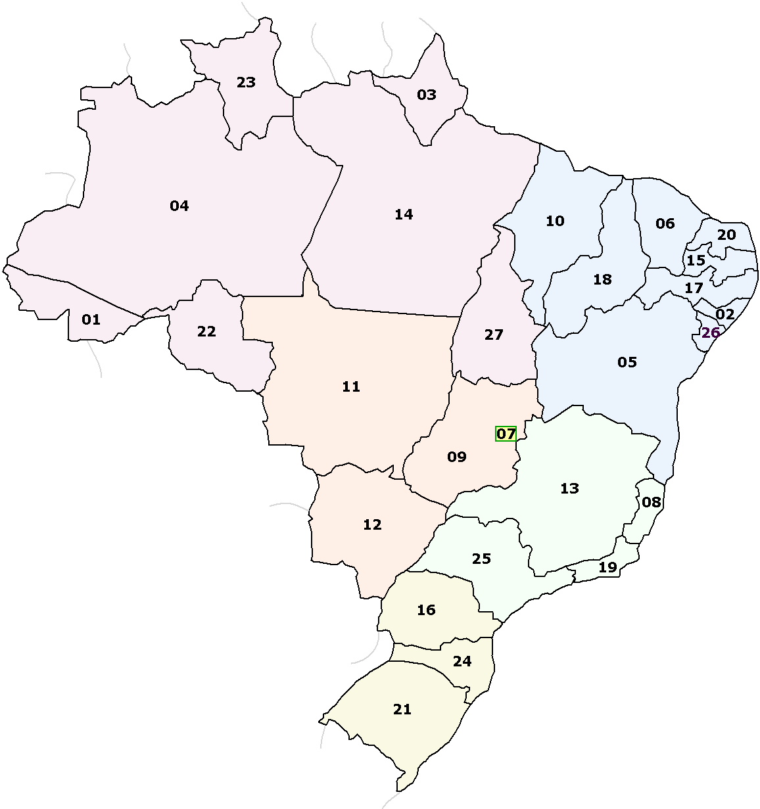
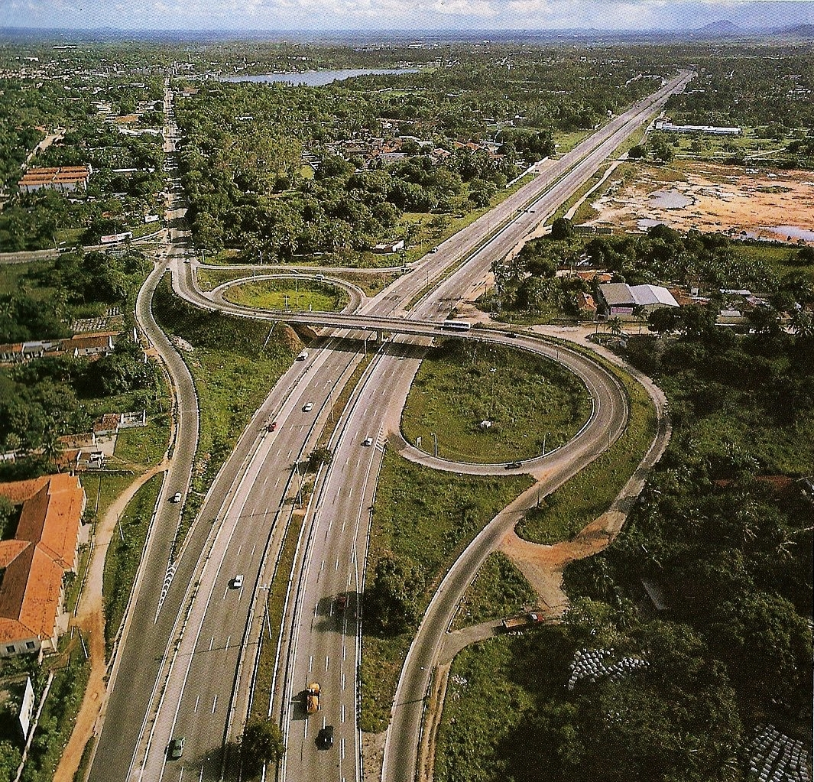
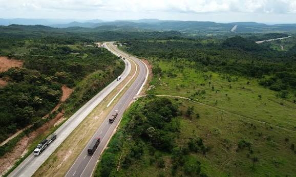
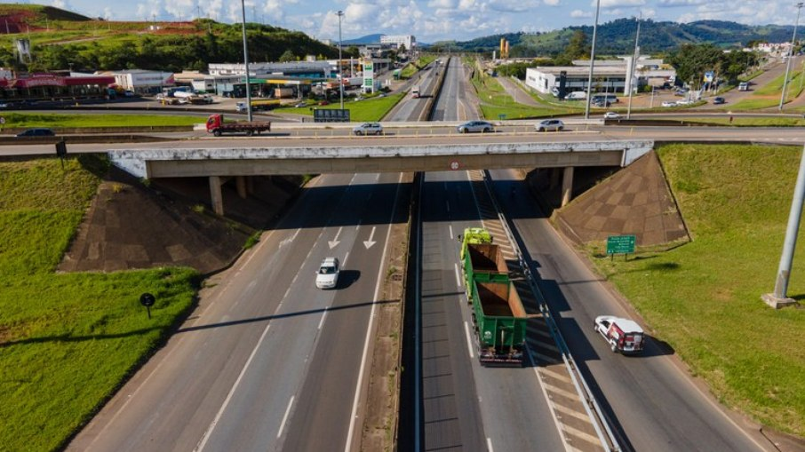
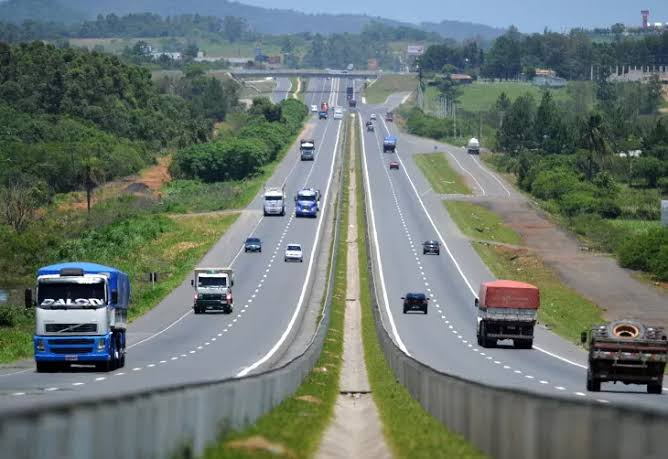

🛣️ Mapa das Principais Rodovias do Brasil
As rodovias brasileiras conectam todas as regiões do país, permitindo o transporte de alimentos, combustíveis, medicamentos e diversos produtos que movimentam a economia nacional.
<

🔴 BR-116
Extensão: 4.660 km
Trajeto: Fortaleza (CE) → Jaguarão (RS)
A BR-116 é considerada a espinha dorsal do Brasil, sendo uma das rodovias mais importantes para o transporte de cargas e passageiros.

🟠 BR-163
Extensão: 3.580 km
Trajeto: Tenente Portela (RS) → Santarém (PA)
Liga o Sul ao Norte do Brasil, sendo uma das principais rodovias utilizadas pelo agronegócio.

🟢 BR-381
Extensão: 946 km
Trajeto: São Paulo (SP) → Belo Horizonte (MG)
Conhecida como Rodovia Fernão Dias, liga duas das maiores regiões metropolitanas do Brasil e possui intenso fluxo de caminhões.

🟡 BR-101
Extensão: 4.765 km
Trajeto: Touros (RN) → São José do Norte (RS)
A maior rodovia litorânea do Brasil, passando por 12 estados e conectando importantes cidades do país.